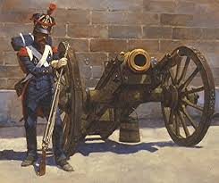
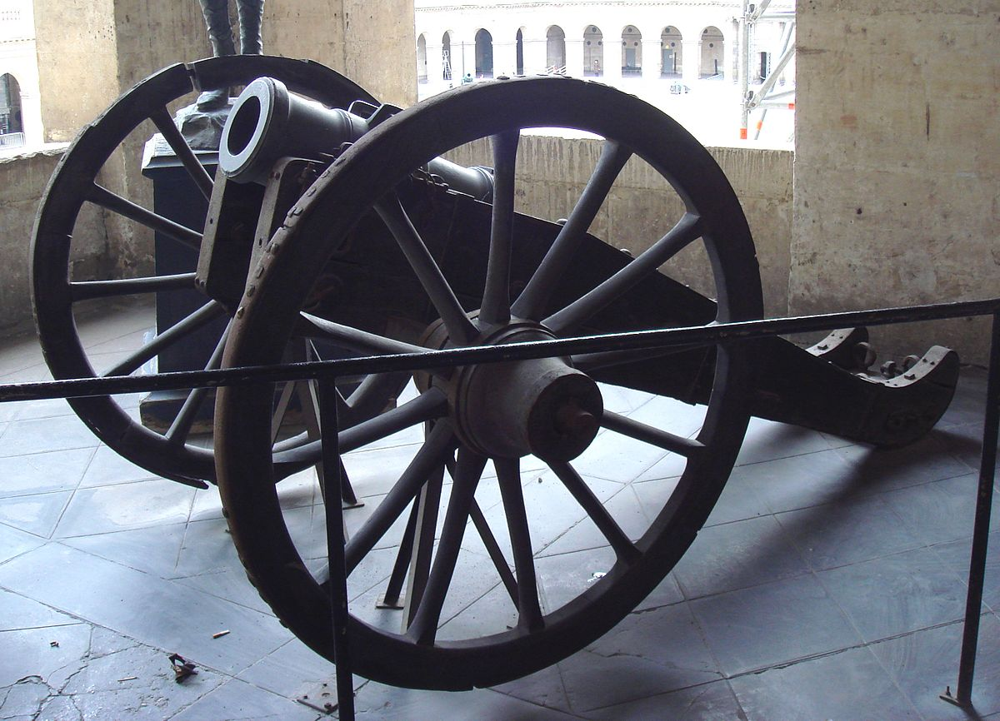
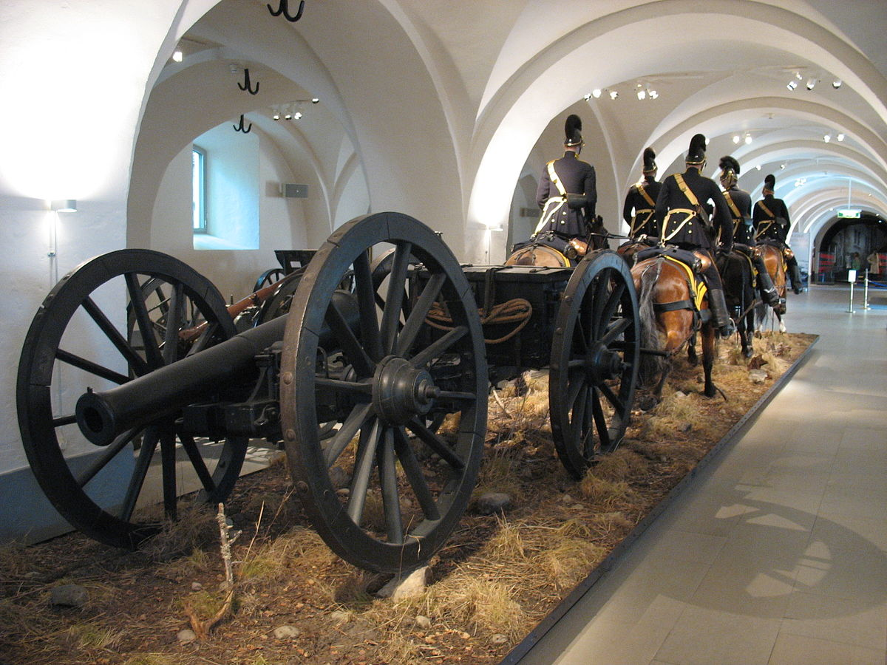
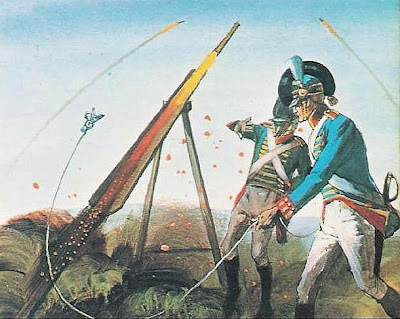

The Uniforms of the Napoleonic Armies
Uniforms played a crucial role in the Napoleonic Wars, serving as more than mere clothing; they were a symbol of military identity and cohesion. During this period, uniforms were meticulously designed to denote rank, regiment, and nationality, which was essential on the chaotic battlefield. The distinctive colors and patterns of each regiment helped soldiers identify friend from foe, a crucial factor in the heat of battle. Additionally, the standardization of uniforms fostered a sense of unity and discipline among troops, reinforcing the hierarchical structure and boosting morale. The elaborate designs often included elements like epaulettes, braiding, and feathers, which not only had practical purposes but also conveyed an air of authority and prestige. Uniforms were also important for the logistical coordination of large-scale movements, as they enabled officers and strategists to manage and deploy troops more effectively. The consistency in appearance helped maintain order during complex maneuvers and engagements, reducing confusion in the ranks. In summary, the uniforms of the Napoleonic Wars were integral to both the functional and symbolic aspects of military organization, highlighting their significance beyond mere practicality.
Firearms of the Napoleonic Wars
Firearms during the Napoleonic Wars were pivotal in shaping the tactics and outcomes of battles, reflecting the era's advancements in military technology. The introduction of rifled muskets and the refinement of flintlock mechanisms marked a significant evolution from earlier firearms, enhancing both range and accuracy. The standard-issue Brown Bess musket, with its smoothbore barrel, was the primary weapon for British infantry, known for its durability and reliability despite its limited range. Conversely, the French army favored the Charleville musket, which was similarly robust but had its own distinct features and advantages. The ability to fire in volley formations became central to battle tactics, allowing massed ranks of soldiers to deliver devastating firepower. This period also saw the increasing use of artillery, such as cannons and howitzers, which complemented infantry fire and played a crucial role in sieges and field battles. The development of breech-loading rifles and improved artillery pieces began to emerge, hinting at future advancements in firearm technology. Overall, firearms were not only tools of war but also symbols of the evolving nature of military strategy during the Napoleonic era.
Foot Artillery

Foot artillery during the Napoleonic Wars was essential for providing close support to infantry units, delivering devastating firepower with cannons and howitzers. Unlike horse artillery, which was highly mobile and used for rapid maneuvers, foot artillery was typically deployed in fixed positions, where it could leverage its heavy firepower to break enemy lines and fortify defensive positions.
Howitzers

Howitzers during the Napoleonic Wars were crucial for their ability to fire shells at high angles, allowing them to hit targets behind cover and in fortified positions. Their versatility made them effective in both bombardments and siege operations, where their explosive shells could cause significant damage to enemy fortifications and troops.
Horse Artillery

Horse artillery during the Napoleonic Wars was renowned for its mobility and rapid deployment, enabling it to support and reinforce infantry and cavalry units swiftly on the battlefield. Equipped with lighter guns and designed for quick movement, horse artillery could rapidly shift positions, deliver powerful barrages, and then reposition before the enemy could retaliate effectively.
Congreve Rockets

Congreve rockets during the Napoleonic Wars were notable for their ability to deliver explosive payloads over long distances, creating fear and confusion among enemy troops. These early rocket artillery pieces, though imprecise compared to cannons, added a psychological edge to the battlefield with their distinctive whistling sound and fiery trails.
 EQUIPMENT
EQUIPMENT